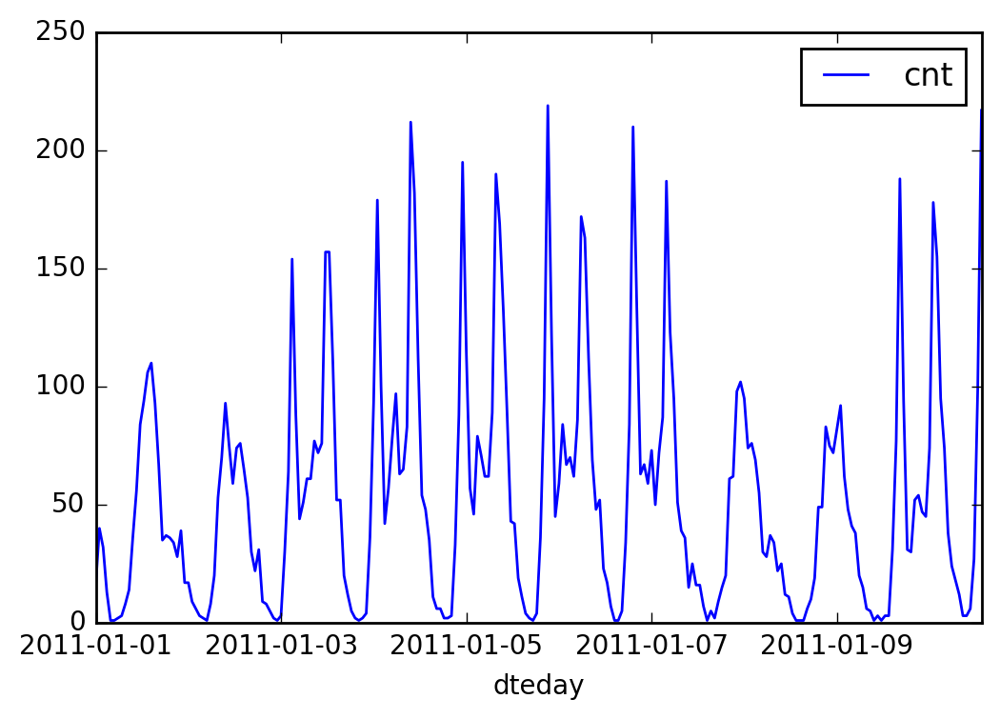

Your first neural network
In this project, you'll build your first neural network and use it to predict daily bike rental ridership. We've provided some of the code, but left the implementation of the neural network up to you (for the most part). After you've submitted this project, feel free to explore the data and the model more.
%matplotlib inline %config InlineBackend.figure_format = 'retina' import numpy as np import pandas as pd import matplotlib.pyplot as plt
Load and prepare the data
A critical step in working with neural networks is preparing the data correctly. Variables on different scales make it difficult for the network to efficiently learn the correct weights. Below, we've written the code to load and prepare the data. You'll learn more about this soon!
data_path = 'Bike-Sharing-Dataset/hour.csv' rides = pd.read_csv(data_path)
rides.head()
| instant | dteday | season | yr | mnth | hr | holiday | weekday | workingday | weathersit | temp | atemp | hum | windspeed | casual | registered | cnt | |
|---|---|---|---|---|---|---|---|---|---|---|---|---|---|---|---|---|---|
| 0 | 1 | 2011-01-01 | 1 | 0 | 1 | 0 | 0 | 6 | 0 | 1 | 0.24 | 0.2879 | 0.81 | 0.0 | 3 | 13 | 16 |
| 1 | 2 | 2011-01-01 | 1 | 0 | 1 | 1 | 0 | 6 | 0 | 1 | 0.22 | 0.2727 | 0.80 | 0.0 | 8 | 32 | 40 |
| 2 | 3 | 2011-01-01 | 1 | 0 | 1 | 2 | 0 | 6 | 0 | 1 | 0.22 | 0.2727 | 0.80 | 0.0 | 5 | 27 | 32 |
| 3 | 4 | 2011-01-01 | 1 | 0 | 1 | 3 | 0 | 6 | 0 | 1 | 0.24 | 0.2879 | 0.75 | 0.0 | 3 | 10 | 13 |
| 4 | 5 | 2011-01-01 | 1 | 0 | 1 | 4 | 0 | 6 | 0 | 1 | 0.24 | 0.2879 | 0.75 | 0.0 | 0 | 1 | 1 |
Checking out the data
This dataset has the number of riders for each hour of each day from January 1 2011 to December 31 2012. The number of riders is split between casual and registered, summed up in the cnt column. You can see the first few rows of the data above.
Below is a plot showing the number of bike riders over the first 10 days in the data set. You can see the hourly rentals here. This data is pretty complicated! The weekends have lower over all ridership and there are spikes when people are biking to and from work during the week. Looking at the data above, we also have information about temperature, humidity, and windspeed, all of these likely affecting the number of riders. You'll be trying to capture all this with your model.
rides[:24*10].plot(x='dteday', y='cnt')
<matplotlib.axes._subplots.AxesSubplot at 0x10cfe1dd8>

Dummy variables
Here we have some categorical variables like season, weather, month. To include these in our model, we'll need to make binary dummy variables. This is simple to do with Pandas thanks to get_dummies().
dummy_fields = ['season', 'weathersit', 'mnth', 'hr', 'weekday'] for each in dummy_fields: dummies = pd.get_dummies(rides[each], prefix=each, drop_first=False) rides = pd.concat([rides, dummies], axis=1) fields_to_drop = ['instant', 'dteday', 'season', 'weathersit', 'weekday', 'atemp', 'mnth', 'workingday', 'hr'] data = rides.drop(fields_to_drop, axis=1) data.head()
| yr | holiday | temp | hum | windspeed | casual | registered | cnt | season_1 | season_2 | ... | hr_21 | hr_22 | hr_23 | weekday_0 | weekday_1 | weekday_2 | weekday_3 | weekday_4 | weekday_5 | weekday_6 | |
|---|---|---|---|---|---|---|---|---|---|---|---|---|---|---|---|---|---|---|---|---|---|
| 0 | 0 | 0 | 0.24 | 0.81 | 0.0 | 3 | 13 | 16 | 1.0 | 0.0 | ... | 0.0 | 0.0 | 0.0 | 0.0 | 0.0 | 0.0 | 0.0 | 0.0 | 0.0 | 1.0 |
| 1 | 0 | 0 | 0.22 | 0.80 | 0.0 | 8 | 32 | 40 | 1.0 | 0.0 | ... | 0.0 | 0.0 | 0.0 | 0.0 | 0.0 | 0.0 | 0.0 | 0.0 | 0.0 | 1.0 |
| 2 | 0 | 0 | 0.22 | 0.80 | 0.0 | 5 | 27 | 32 | 1.0 | 0.0 | ... | 0.0 | 0.0 | 0.0 | 0.0 | 0.0 | 0.0 | 0.0 | 0.0 | 0.0 | 1.0 |
| 3 | 0 | 0 | 0.24 | 0.75 | 0.0 | 3 | 10 | 13 | 1.0 | 0.0 | ... | 0.0 | 0.0 | 0.0 | 0.0 | 0.0 | 0.0 | 0.0 | 0.0 | 0.0 | 1.0 |
| 4 | 0 | 0 | 0.24 | 0.75 | 0.0 | 0 | 1 | 1 | 1.0 | 0.0 | ... | 0.0 | 0.0 | 0.0 | 0.0 | 0.0 | 0.0 | 0.0 | 0.0 | 0.0 | 1.0 |
5 rows × 59 columns
Scaling target variables
To make training the network easier, we'll standardize each of the continuous variables. That is, we'll shift and scale the variables such that they have zero mean and a standard deviation of 1.
The scaling factors are saved so we can go backwards when we use the network for predictions.
quant_features = ['casual', 'registered', 'cnt', 'temp', 'hum', 'windspeed'] # Store scalings in a dictionary so we can convert back later scaled_features = {} for each in quant_features: mean, std = data[each].mean(), data[each].std() scaled_features[each] = [mean, std] data.loc[:, each] = (data[each] - mean)/std
Splitting the data into training, testing, and validation sets
We'll save the last 21 days of the data to use as a test set after we've trained the network. We'll use this set to make predictions and compare them with the actual number of riders.
# Save the last 21 days test_data = data[-21*24:] data = data[:-21*24] # Separate the data into features and targets target_fields = ['cnt', 'casual', 'registered'] features, targets = data.drop(target_fields, axis=1), data[target_fields] test_features, test_targets = test_data.drop(target_fields, axis=1), test_data[target_fields]
We'll split the data into two sets, one for training and one for validating as the network is being trained. Since this is time series data, we'll train on historical data, then try to predict on future data (the validation set).
# Hold out the last 60 days of the remaining data as a validation set train_features, train_targets = features[:-60*24], targets[:-60*24] val_features, val_targets = features[-60*24:], targets[-60*24:]
Time to build the network
Below you'll build your network. We've built out the structure and the backwards pass. You'll implement the forward pass through the network. You'll also set the hyperparameters: the learning rate, the number of hidden units, and the number of training passes.
The network has two layers, a hidden layer and an output layer. The hidden layer will use the sigmoid function for activations. The output layer has only one node and is used for the regression, the output of the node is the same as the input of the node. That is, the activation function is $f(x)=x$. A function that takes the input signal and generates an output signal, but takes into account the threshold, is called an activation function. We work through each layer of our network calculating the outputs for each neuron. All of the outputs from one layer become inputs to the neurons on the next layer. This process is called forward propagation.
We use the weights to propagate signals forward from the input to the output layers in a neural network. We use the weights to also propagate error backwards from the output back into the network to update our weights. This is called backpropagation.
Hint: You'll need the derivative of the output activation function ($f(x) = x$) for the backpropagation implementation. If you aren't familiar with calculus, this function is equivalent to the equation $y = x$. What is the slope of that equation? That is the derivative of $f(x)$.
Below, you have these tasks:
1. Implement the sigmoid function to use as the activation function. Set self.activation_function in __init__ to your sigmoid function.
2. Implement the forward pass in the train method.
3. Implement the backpropagation algorithm in the train method, including calculating the output error.
4. Implement the forward pass in the run method.
def sigmoid(x): return 1 / ( 1 + np.exp(-x))
def MSE(y, Y): return np.mean((y-Y)**2)
class NeuralNetwork(object): def __init__(self, input_nodes, hidden_nodes, output_nodes, learning_rate): # Set number of nodes in input, hidden and output layers. self.input_nodes = input_nodes self.hidden_nodes = hidden_nodes self.output_nodes = output_nodes # Initialize weights self.weights_input_to_hidden = np.random.normal(0.0, self.hidden_nodes**-0.5, (self.hidden_nodes, self.input_nodes)) self.weights_hidden_to_output = np.random.normal(0.0, self.output_nodes**-0.5, (self.output_nodes, self.hidden_nodes)) self.lr = learning_rate #### Set this to your implemented sigmoid function #### # Activation function is the sigmoid function #self.activation_function = lambda x: 1 / ( 1 + np.exp(-x)) self.activation_function = sigmoid # Gradient of Sigmoid curve def sigmoid_derivative(self, z): return z*(1-z) def train(self, inputs_list, targets_list, verbose): # Convert inputs list to 2d array inputs = np.array(inputs_list, ndmin=2).T targets = np.array(targets_list, ndmin=2).T results = {} if verbose: results["inputs"] = inputs results["targets"] = targets results["o-weights_input_to_hidden"] = self.weights_input_to_hidden results["o-weights_hidden_to_output"] = self.weights_hidden_to_output #### Implement the forward pass here #### ### Forward pass ### # TODO: Hidden layer hidden_inputs = np.dot(self.weights_input_to_hidden,inputs)# signals into hidden layer hidden_outputs = self.activation_function(hidden_inputs)# signals from hidden layer # TODO: Output layer final_inputs = np.dot(self.weights_hidden_to_output,hidden_outputs)# signals into final output layer final_outputs = final_inputs # signals from final output layer if verbose: results["hidden_inputs"] = hidden_inputs results["hidden_outputs"] = hidden_outputs results["final_inputs"] = final_inputs results["final_outputs"] = final_outputs #### Implement the backward pass here #### ### Backward pass ### # TODO: Output error # Output layer error is the difference between desired target and actual output. output_errors = (targets - final_outputs ) # TODO: Backpropagated error # errors propagated to the hidden layer hidden_grad = self.sigmoid_derivative(hidden_outputs) # hidden layer gradients hidden_errors = np.dot(self.weights_hidden_to_output.T,output_errors) if verbose: results["output_errors"]=output_errors results["hidden_grad"] = hidden_grad results["hidden_errors"] = hidden_errors # TODO: Update the weights # update hidden-to-output weights with gradient descent step self.weights_hidden_to_output += self.lr*\ np.dot(output_errors,hidden_outputs.T) # update input-to-hidden weights with gradient descent step self.weights_input_to_hidden += self.lr*\ np.dot(hidden_errors*hidden_grad,inputs.T) if verbose: results["weights_hidden_to_output"] = self.weights_hidden_to_output results["weights_input_to_hidden"] = self.weights_input_to_hidden results["Error"]= MSE(final_outputs,targets) return results def run(self, inputs_list): # Run a forward pass through the network inputs = np.array(inputs_list, ndmin=2).T #### Implement the forward pass here #### # TODO: Hidden layer hidden_inputs = np.dot(self.weights_input_to_hidden,inputs)# signals into hidden layer hidden_outputs = self.activation_function(hidden_inputs)# signals from hidden layer # TODO: Output layer final_inputs = np.dot(self.weights_hidden_to_output,hidden_outputs)# signals into final output layer final_outputs = final_inputs # signals from final output layer #print(self.weights_input_to_hidden) return final_outputs
My Network Checker
Following is the detail theory for input dim =3, hidden layer = 2 and output layer = 1
Feed farward:
1. Hidden input = input_to_hidden_weights * input
$$\left[ {\begin{array}{c}
z_{1}^{2} \
z_{2}^{2} \
\end{array} } \right] = \left[ {\begin{array}{cc}
W_{11}^{1} & W_{12}^{1} & W_{13}^{1} \
W_{21}^{1} & W_{22}^{1} & W_{23}^{1}\
\end{array} } \right]\left[ {\begin{array}{c}
x_{1} \
x_{2} \
x_{3}\
\end{array} } \right] = \left[ {\begin{array}{c}
W_{11}^{1}x_1 + W_{12}^{1}x_2 + W_{13}^{1}x_3 \
W_{21}^{1}x_1 + W_{22}^{1}x_2 + W_{23}^{1}x_3 \
\end{array} } \right] $$
2. Hidden Output = activation(hidden input)
$$ \left[ {\begin{array}{c}
a_{1}^{2} \
a_{2}^{2} \
\end{array} } \right] =
\left[ {\begin{array}{c}
\sigma(z^{2}{1}) \
\sigma(z^{2}{2}) \
\end{array} } \right] $$
3. Final input = hidden_to_output_weights* hidden output
$$ z_{1}^{3} = \left[ {\begin{array}{c}
W_{11}^{2} & W_{12}^{2} \
\end{array} } \right]\left[ {\begin{array}{c}
a_{1}^{2} \
a_{2}^{2} \
\end{array} } \right] = [ W_{11}^{2}a_1^{2} + W_{12}^{2}a_2^{2}] $$
4. Final output = activation(final input)
$$ a^{3}{1} = \sigma(z{1}^{3}) $$
inputs = [0.5, -0.2, 0.1] targets = [0.4] test_w_i_h = np.array([[0.1, 0.4, -0.3], [-0.2, 0.5, 0.2]]) test_w_h_o = np.array([[0.3, -0.1]]) NN = NeuralNetwork(3, 2, 1, 0.5) NN.weights_input_to_hidden = test_w_i_h.copy() NN.weights_hidden_to_output = test_w_h_o.copy() NN.train(inputs, targets, verbose = True)
{'Error': 0.090006456864883497,
'final_inputs': array([[ 0.09998924]]),
'final_outputs': array([[ 0.09998924]]),
'hidden_errors': array([[ 0.09000323],
[-0.03000108]]),
'hidden_grad': array([[ 0.24977513],
[ 0.24798589]]),
'hidden_inputs': array([[-0.06],
[-0.18]]),
'hidden_outputs': array([[ 0.4850045 ],
[ 0.45512111]]),
'inputs': array([[ 0.5],
[-0.2],
[ 0.1]]),
'o-weights_hidden_to_output': array([[ 0.37275328, -0.03172939]]),
'o-weights_input_to_hidden': array([[ 0.10562014, 0.39775194, -0.29887597],
[-0.20185996, 0.50074398, 0.19962801]]),
'output_errors': array([[ 0.30001076]]),
'targets': array([[ 0.4]]),
'weights_hidden_to_output': array([[ 0.37275328, -0.03172939]]),
'weights_input_to_hidden': array([[ 0.10562014, 0.39775194, -0.29887597],
[-0.20185996, 0.50074398, 0.19962801]])}
Training the network
Here you'll set the hyperparameters for the network. The strategy here is to find hyperparameters such that the error on the training set is low, but you're not overfitting to the data. If you train the network too long or have too many hidden nodes, it can become overly specific to the training set and will fail to generalize to the validation set. That is, the loss on the validation set will start increasing as the training set loss drops.
You'll also be using a method know as Stochastic Gradient Descent (SGD) to train the network. The idea is that for each training pass, you grab a random sample of the data instead of using the whole data set. You use many more training passes than with normal gradient descent, but each pass is much faster. This ends up training the network more efficiently. You'll learn more about SGD later.
Choose the number of epochs
This is the number of times the dataset will pass through the network, each time updating the weights. As the number of epochs increases, the network becomes better and better at predicting the targets in the training set. You'll need to choose enough epochs to train the network well but not too many or you'll be overfitting.
Choose the learning rate
This scales the size of weight updates. If this is too big, the weights tend to explode and the network fails to fit the data. A good choice to start at is 0.1. If the network has problems fitting the data, try reducing the learning rate. Note that the lower the learning rate, the smaller the steps are in the weight updates and the longer it takes for the neural network to converge.
Choose the number of hidden nodes
The more hidden nodes you have, the more accurate predictions the model will make. Try a few different numbers and see how it affects the performance. You can look at the losses dictionary for a metric of the network performance. If the number of hidden units is too low, then the model won't have enough space to learn and if it is too high there are too many options for the direction that the learning can take. The trick here is to find the right balance in number of hidden units you choose.
train_features.shape
(15435, 56)
import sys ### Set the hyperparameters here ### epochs = 1000 learning_rate = 0.1 hidden_nodes = 28 output_nodes = 1 N_i = train_features.shape[1] network = NeuralNetwork(N_i, hidden_nodes, output_nodes, learning_rate) losses = {'train':[], 'validation':[]} for e in range(epochs): # Go through a random batch of 128 records from the training data set batch = np.random.choice(train_features.index, size=128) for record, target in zip(train_features.ix[batch].values, train_targets.ix[batch]['cnt']): network.train(record, target, verbose = False) # Printing out the training progress train_loss = MSE(network.run(train_features), train_targets['cnt'].values) val_loss = MSE(network.run(val_features), val_targets['cnt'].values) #print(epochs,train_loss,val_loss) sys.stdout.write("\rProgress: " + str(100 * e/float(epochs))[:4] \ + "% ... Training loss: " + str(train_loss)[:5] \ + " ... Validation loss: " + str(val_loss)[:5]) losses['train'].append(train_loss) losses['validation'].append(val_loss)
Progress: 99.9% ... Training loss: 0.058 ... Validation loss: 0.147
plt.plot(losses['train'], label='Training loss') plt.plot(losses['validation'], label='Validation loss') plt.legend() plt.ylim(ymax=1.5) plt.show()
Check out your predictions
Here, use the test data to view how well your network is modeling the data. If something is completely wrong here, make sure each step in your network is implemented correctly.
fig, ax = plt.subplots(figsize=(8,4)) mean, std = scaled_features['cnt'] predictions = network.run(test_features)*std + mean ax.plot(predictions[0], label='Prediction') ax.plot((test_targets['cnt']*std + mean).values, label='Data') ax.set_xlim(right=len(predictions)) ax.legend() dates = pd.to_datetime(rides.ix[test_data.index]['dteday']) dates = dates.apply(lambda d: d.strftime('%b %d')) ax.set_xticks(np.arange(len(dates))[12::24]) _ = ax.set_xticklabels(dates[12::24], rotation=45)
Thinking about your results
Answer these questions about your results. How well does the model predict the data? Where does it fail? Why does it fail where it does?
Note: You can edit the text in this cell by double clicking on it. When you want to render the text, press control + enter
Your answer below
Unit tests
Run these unit tests to check the correctness of your network implementation. These tests must all be successful to pass the project.
import unittest inputs = [0.5, -0.2, 0.1] targets = [0.4] test_w_i_h = np.array([[0.1, 0.4, -0.3], [-0.2, 0.5, 0.2]]) test_w_h_o = np.array([[0.3, -0.1]]) class TestMethods(unittest.TestCase): ########## # Unit tests for data loading ########## def test_data_path(self): # Test that file path to dataset has been unaltered self.assertTrue(data_path.lower() == 'bike-sharing-dataset/hour.csv') def test_data_loaded(self): # Test that data frame loaded self.assertTrue(isinstance(rides, pd.DataFrame)) ########## # Unit tests for network functionality ########## def test_activation(self): network = NeuralNetwork(3, 2, 1, 0.5) # Test that the activation function is a sigmoid self.assertTrue(np.all(network.activation_function(0.5) == 1/(1+np.exp(-0.5)))) def test_train(self): # Test that weights are updated correctly on training network = NeuralNetwork(3, 2, 1, 0.5) network.weights_input_to_hidden = test_w_i_h.copy() network.weights_hidden_to_output = test_w_h_o.copy() network.train(inputs, targets,verbose = False) self.assertTrue(np.allclose(network.weights_hidden_to_output, np.array([[ 0.37275328, -0.03172939]]))) self.assertTrue(np.allclose(network.weights_input_to_hidden, np.array([[ 0.10562014, 0.39775194, -0.29887597], [-0.20185996, 0.50074398, 0.19962801]]))) def test_run(self): # Test correctness of run method network = NeuralNetwork(3, 2, 1, 0.5) network.weights_input_to_hidden = test_w_i_h.copy() network.weights_hidden_to_output = test_w_h_o.copy() self.assertTrue(np.allclose(network.run(inputs), 0.09998924)) suite = unittest.TestLoader().loadTestsFromModule(TestMethods()) unittest.TextTestRunner().run(suite)
..... ---------------------------------------------------------------------- Ran 5 tests in 0.006s OK <unittest.runner.TextTestResult run=5 errors=0 failures=0>
Some Fun Resources:
Image:Neural Networks by Simon
Following is the detail of (input =3, hidden=2,output =1)
THANK YOU!